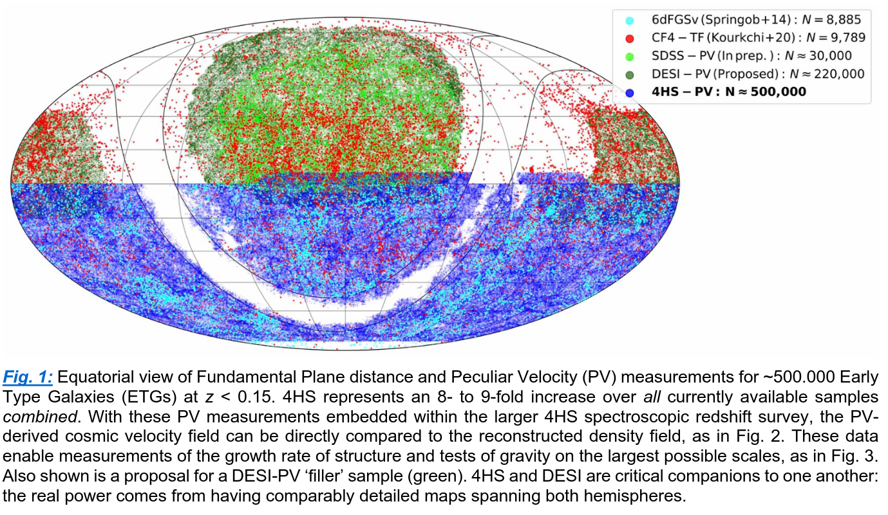

Scientific Rationale
The 4MOST Hemisphere Survey (4HS) is designed to deliver the best possible description of galaxies in the \(z < 0.15\) Universe, focusing on science applications that absolutely require spectroscopic (cf. photometric) redshifts. The 4HS galaxy sample is NIR-flux limited (\(J^\mathrm{AB} < 17\)) as a close approximation to a stellar mass selection (volume limited for \(\log M_\star > 9.3,10.0,10.3\) and \(z < 0.05,0.10,0.15\)), and NIR colour-selected (\((J - K)^\mathrm{AB} < 0.45\)) to preselect galaxies to \(z \sim 0.3\) and with near-total completeness for >2.5 M galaxies in the z < 0.15 interval. Our mean target density is \(\sim325 / \mathrm{deg}^2\) and, for the reasons given below, we aim to survey the widest possible area: our goal is ~5.8 M galaxies over 17.000+ \(\mathrm{deg}^2\). As a participating survey within 4MOST, 4HS can obtain high spectroscopic completeness with minimal bias as a function of local target density (cf. ‘fibre collisions’ in SDSS; DESI). The overarching goal of 4HS is to produce a comprehensive census of galaxies in the local Universe, with broad and lasting scientific impact for the fields of both cosmology and galaxy evolution, strong synergies with the broader 4MOST project, and exceptional legacy value for science with flagship Southern and European facilities — particularly LSST, Euclid, and SKA.
Mass and Motion in the Local Universe
Cosmic Cartography
4HS will map large-scale structure (LSS) and the cosmic density field in the Southern half of the z < 0.15 Universe, based on spectroscopic redshift measurements for ~5.8 M galaxies across the hemisphere, and pushing into the traditional Zone of Avoidance (see Fig.s 1 and 2). Locally, the largest cosmic structures (e.g. the Laniakea Supercluster; Tully+2014) are difficult to identify because they are just so large on the sky (~200 deg). Existing Southern surveys (e.g. 6dFGS, CF4-TF; see Fig. 1) are insufficiently deep to properly map the most massive known structures in the Southern sky (Said+2020), ncluding the Shapley and Vela superclusters, and the filaments that feed them. We also know that the picture is not yet complete: while the Cosmic Microwave Background (CMB) dipole is well-measured, this motion still cannot be reconciled with our best measurements of the local, large-scale mass distribution (Bilicki+2011). Knowing the motions of the Milky Way and other Local Volume galaxies (with respect to the CMB and local LSS) is crucial to resolving long-standing issues: for example, whether the apparently planar distribution of satellites around the Milky Way and other Local Group galaxies (e.g. Libeskind+2015) is a challenge to ΛCDM cosmology, a statistical fluke, or a natural consequence of our position in the local cosmic web. In this space, 4HS and the DESI Bright Galaxy Survey (BGS) are critical companions: the real power comes from combining comparably detailed maps uniformly spanning both hemispheres, to obtain a complete and coherent picture of what shapes the evolution of the Local Group, the Local Volume, and the Local Cosmic Web.

The Growth Rate of Structure
In the same way that galaxy positions trace the cosmic density field, galaxies act as trace particles in the large-scale cosmic velocity field. In particular, coherent flows seen in peculiar velocities (PVs; i.e. deviation from Hubble flow) provide an instantaneous snapshot of the cosmic web in formation via gravitational collapse. With Fundamental Plane-derived distances and PVs for ~500.000 early-type galaxies (ETGs), 4HS will map the cosmic velocity field to \(z < 0.15\), and so the growth of structure over 1 Gpc (see Fig. 2).
The headline 4HS cosmology goal is to measure the late-time (< 3 Gyr) evolution of the cosmological growth rate of structure parameter, \(f(z)\sigma_8\), at 5–10% precision in each of six redshift bins across the interval \(0 < z < 0.3\). This represents a factor of 1.5–2.5 improvement over the best available constraint from the full 6dFGS survey (Beutler+2012) in each individual redshift bin, or a factor of 7 gain across the \(z < 0.3\) interval. PVs are the only way to measure gravity and the growth of structure where alternative cosmologies are most distinguishable: viz. at late times and on large scales. This is because 1.) the signal from Redshift Space Distortions saturates at late-times (< 2 Gyr; \(z < 0.15\)); and 2.) whereas RSD operates on the intermediate scales of group/cluster infall (1–10 Mpc), PVs trace gravity and structure formation on the largest possible scales (> 50 Mpc). This 4HS measurement will lead directly to improved constraints on related cosmological parameters including \(\sigma_8\) and \(\Omega_\mathrm{m}\) in a way that is not possible with other probes (Said+2020). Our 4HS cosmology goals are thus wholly complementary to both 4CRS and DESI.
Tests of gravity
The combination of both cosmic mass density and velocity fields provides a measure of the large-scale cosmic gravitational field, where the in/consistency between these two fields serves as a direct test of General Relativity (GR) and alternative theories of gravity. 4HS will measure the gravitational growth index, \(\gamma\), to ~5% precision relative to the GR value \(\gamma = 0.55\) (Fig. 3). Further, with high completeness, 4HS can measure gravity well into the non-linear regime (i.e. down to the scales of individual halos), where modified gravity theories often converge back to GR. Just as for the cosmological growth rate of structure, these measurements at late times and over the largest possible scales represent the most stringent tests of gravity, as described by GR and alternative theories.

The Imperative for Wide Areas
4HS represents a singular opportunity to obtain the ultimate measurement of gravity and the cosmological growth of structure – on the largest physical scales and at low-z/late times, where there is greatest discriminating power between alternate models/theories – based on the simultaneous mapping of the cosmic density and velocity fields. The velocity field measurement precision scales directly with volume – and so, at low-z, with area. Area is also critically important to overcome biases introduced by a Local Group observer location (e.g. Hellwing+2018). Large and contiguous volumes, as well as high completeness, are required for full reconstruction of the mass density field (Carrick+2015). Here again, the synergies between 4HS, 4CRS, and DESI-BGS are very strong (Fig. 1 and 3): together, these surveys will measure sufficiently large and complementary volumes to approach the fundamental floor set by Universal cosmic variance out to \(z \lesssim0.4\) — a landmark achievement.
Nature and Nurture: The Role of Environment in Galaxy Evolution
Understanding the Impact of Environment
4HS is designed to obtain the best possible empirical description of galaxy demographics and their environmental dependence (see Fig. 4) for \(z < 0.15\). It is well-established that virtually all galaxy properties vary as a function of environment, whether expressed in terms of halo mass, local overdensity, or in terms of clusters, groups, filaments, voids, etc. Theory and observations have identified numerous mechanisms that operate on varying timescales (e.g. AGN feedback; Croton+2006), across different mass regimes (e.g. starvation of the gas supply; Larson+1980), and under diverse environmental conditions (e.g. ram-pressure stripping; Gunn & Gott 1972). The challenge is to isolate the relative importance of different mechanisms — but we are at an impasse. Disentangling the role and impact of these varied processes is a multi-dimensional problem that can only be resolved through overwhelming statistics combined with high-quality data: 4HS will deliver the comprehensive suite of environment metrics for a large and unbiased galaxy sample that is required to advance the field.
Galaxy Groups are Key
The depth of the gravitational potential well of the larger group halo strongly influences the process of galaxy evolution; especially the rate of mass assembly through gas accretion and/or mergers, and the efficiency of halo heating from AGN, star formation, or shocks. For example: the ‘quenching’ of star formation appears to involve the interplay between both internal and environment processes at the group scale (e.g. Li+2020). Another example: different recipes for AGN feedback lead to very different predictions for group baryon fraction as a function of group mass (e.g. Eckert+2017), with implications for measurements of the cosmological mass power spectrum (e.g. van Daalen+2011). Simulations also show that AGN feedback can extend across the larger group environment (McCarthy+2010), thereby impacting the analysis of even purely statistical studies (e.g. Semboloni+2011).
Groups in the low-to-intermediate halo mass regime (\(10^{11}-10^{13}\,\mathrm{M}_\odot\) ; i.e. pairs, triples, and up to \(N \sim 10\)) are the best laboratories for understanding both gas–stellar and baryon–dark matter feedback mechanisms. This is the regime where group and galaxy properties seem to be most sensitive to the relative strengths of interacting processes (Davies+2019), because low mass groups can retain a large fraction of their baryons (cf. clusters). Robust group identification and characterization requires high spectroscopic redshift completeness, with minimal bias as a function of local target density (cf. SDSS, DESI). This is something only 4HS can deliver, by virtue of the unique 4MOST consortium model. 4HS will identify ~30.000 groups in this low-to-intermediate regime, and >60.000 groups overall.

The Power of High Completeness and Wide Areas
With high and unbiased completeness (for robust environmental metrics) across the widest possible area (as the most efficient route to the greatest statistical power), 4HS is unrivalled in its ability to map the environmental dependence of galaxy demographics as a function of: 1.) location of galaxies within groups (e.g., central/satellite and/or as a function of group radius); 2.) intrinsic group properties (e.g., richness, mass, compactness/density, X-ray luminosity); 3.) situation within the cosmic web (e.g., distinguishing galaxies/groups within voids, sheets, filaments, or nodes); and 4.) position relative to the cosmic web (e.g., distance from filaments, nodes, or voids). Further, particularly when combined with maps of the cosmic mass and velocity fields, 4HS creates opportunities for the next generation of advanced environment metrics, including marked correlation functions and the small-scale clustering of galaxies with respect to LSS (e.g. Alam+2019). This is significant because, as shown in Fig. 6, environment is a multi-dimensional quantity. It is only by empirically determining which aspects of environment are most directly correlated with galaxy properties that we will be able to disentangle which environmental processes are most relevant in the process of galaxy formation and evolution.

A Benchmark for Galaxy Evolution Surveys and the Latest Theoretical Models
The particular significance of \(z < 0.15\)
Observational studies of galaxy demographics are the empirical bedrock on which cosmological models of galaxy formation are founded. This is especially true for local Universe studies, which provide the statistical anchor for evolutionary studies at higher redshifts, as well as providing a solid basis for theorists to calibrate, validate, and test models and simulations. With a factor of ~7 increase in statistical power over SDSS, and a factor of 2 (to comparable mass/redshift completeness limits) over DESI-BGS, 4HS will establish the definitive benchmark galaxy reference sample for studies of galaxy evolution for the VRO/LSST, Euclid, and SKA era. More important than ‘factor of’ increases in sample size, however, compelling advances in this field come from qualitatively new datasets. To add to the environmental metrics above, two further examples of how 4HS will change the game:
Unprecedented Dwarf Galaxy Demographics
4HS will challenge the next generation of galaxy simulations by characterising ~400.000 dwarf galaxies (\(8.5 < \log M_\star < 9.5\); cf. ~60.000 in SDSS). Factoring in aperture corrections (D’Eugenio+2018), 4HS will measure gas-phase metallicities for an estimated 106 galaxies down to \(\sim0.1-0.15\,\mathrm{Z}_\odot\) (see Fig. 5), including correlations with SFR, environment, etc. This is particularly significant in the era of SKA where gas accretion and disruption can be directly connected, via metallicity, to timescales of star formation and quenching.
Southern Sky advantage
4HS has multiple strategic advantages over similarly ambitious galaxy redshift surveys of the Northern hemisphere, including DESI-BGS. The most important by far is that 4HS is in the Southern hemisphere, which means access to the entire area covered by LSST, ALMA, and ASKAP/MeerKAT/SKA, plus extensive overlap with eRosita, and with Euclid in the South Galactic Cap, to add to existing data from all of GALEX, VISTA-VHS, and WISE. In this context, 4HS is the keystone galaxy redshift survey that is both necessary and sufficient to establish a truly transformational laboratory for the study of galaxy demographics as a function of mass, local environment, and LSS, with superior statistics and comprehensive, panchromatic vision across the full baryon cycle.

Frontier Science and Lasting Legacy
4HS is exceptional in the breadth of science opportunities it enables
In the vein of SDSS, the legacy value of 4HS will vastly outstrip our immediate science goals. As examples, we highlight three specific science opportunities that are uniquely enabled by 4HS in concert with other flagship Southern surveys, each of which absolutely require the fidelity of spectroscopic (cf. photometric) redshifts over very wide areas in the Southern hemisphere.
4HS+SKA to map the baryon cycle
4HS will both support and drive wide-field extragalactic science with SKA: namely, to map the full baryon cycle as a function of mass, environment, and angular momentum. Low-z science with SKA will be driven – or limited – by the availability of spectroscopic redshifts, which are essential for e.g., radio continuum science (SFRs and AGN power) and targeted HI /continuum measurements (including, but not limited to, stacking). Further, to combine with HI masses and dynamics in the ISM and CGM, 4HS will provide: stellar populations, gas/stellar phase metallicities, SFR/AGN diagnostics and — most importantly — comprehensive group/environment metrics. We highlight that all of this science will necessarily be most efficiently done with SKA at \(z < 0.12\), where resolution is greatest, and the impact of radio frequency interference is lowest.
4HS+LSST/Euclid for weak lensing (WL) at all scales
GAMA+KiDS has shown the power of a highly complete galaxy survey as a lensing screen to measure the stellar-to-halo mass relation; globally (van Uitert+2016), and for galaxy sub-samples selected by properties and/or environment (e.g. Sifón+2015). 4HS offers a unique opportunity to match the cosmic density and velocity fields to WL measurements from LSST. Euclid’s very high spatial resolution enables WL science on very small (kpc) scales, but this can only be done at low redshift. 4HS+Euclid will uniquely enable measurements of tidal stripping at the outskirts of satellite halos, as well as inner halo profiles/shapes, which both provide strong constraints on baryon–dark matter feedback processes in galaxy/halo growth and assembly. At even smaller scales, we can obtain an independent measure of stellar mass based on the lensing signal from the stars themselves, to derive unprecedented constraints on the stellar initial mass function, including variations as a function of stellar population and/or environment. In these ways, \(z < 0.15\) WL experiments with 4HS+Euclid would reduce or eliminate multiple major longstanding bugbears in both galaxy formation and WL cosmology.
4HS+LSST/LIGO for transient astronomy
Mitra+2020 have highlighted “a complete spectroscopic survey of SN host galaxies for \(z < 0.2\) as a highly favoured element for robust supernova cosmology” with LSST and Nancy Grace Roman (formerly WFIRST). 4HS will be that survey: not only for photo-z calibration/validation, but as a definitive low-z reference catalogue for host/counterpart identification of LSST and/or LIGO transients across the hemisphere, including galaxy/group masses, stellar populations, SFRs, environment metrics, and more. 4HS is the critical galaxy census that is needed to probe the astrophysics of low-z transients of all kinds. 4HS will enable precise measurement/calibration of potential systematics for Type Ia SNe phenomenology (e.g., environment, metallicity, dust, etc.). 4HS can also provide improved cosmological redshift determinations for transient hosts through group-averaged systemic redshifts and/or bulk flow models. This last point is especially important for gravitational wave standard siren cosmology, where host distances/PVs are a significant source of systematic error/uncertainty (Howlett+2020).
References
Alam, S., et al. (2019), MNRAS, 483, 4501 • Bilicki, M. et al. 2011, ApJ, 741, 13 • Beutler, F., et al. (2012), MNRAS, 423, 3430 • Carrick, J., et al. (2015), MNRAS, 450, 317 • Croton, D. J., et al. (2007), MNRAS, 374, 1303 • Croton, D.J. et al. 2006, MNRAS, 365, 1 • van Daalen, M. P., et al. (2011), MNRAS, 415, 3649 • Davies, L. J. M., et al. (2019), MNRAS, 483, 5444 • D'Eugenio, F., et al. (2018), MNRAS, 479, 1807 • Eckert, K. D., et al. (2017), ApJ, 849, 20 • Ferreras, I., et al. (2019), MNRAS, 487, 435 • Fujita, Y. 2004, PASJ, 56, 29 • Gunn, J.E., & Gott, J.R., III 1972, ApJ, 176, 1 • Hellwing, W. A., et al. (2020), arXiv:2011.08840 • Hellwing, W.A. et al. 2018, Phys. Rev. D, 97, 103519 • Howlett, C. & Davis, T.M. 2020, MNRAS, 492, 3803 • Howlett, C. et al. 2017, MNRAS, 464, 2517 • Hudson, M.J., Turnbull, S.J. 2012, ApJL, 751, L30 • Larson, R.B. et al. 1980, ApJ, 237, 692 • Li, P., et al. (2020), ApJ, 902, 75 • Libeskind, N. I., et al. (2015), MNRAS, 452, 1052 • McCarthy, I. G., et al. (2010), MNRAS, 406, 822 • Mitra, A. & E. V. Linder (2020), arXiv:2011.08206 • Nuza, S. E., et al. (2014), MNRAS, 445, 988 • Said, K., et al. (2020), MNRAS, 497, 1275 • Semboloni, E., et al. (2011), MNRAS, 417, 2020 • Sifón, C., et al. (2015), MNRAS, 454, 3938 • Sousbie, T. (2011), MNRAS, 414, 350 • Tully, R. B., et al. (2014), Nature, 513, 71 • van Uitert, E., et al. (2016), MNRAS, 459, 3251 • Velliscig, M., et al. (2014), MNRAS, 442, 2641